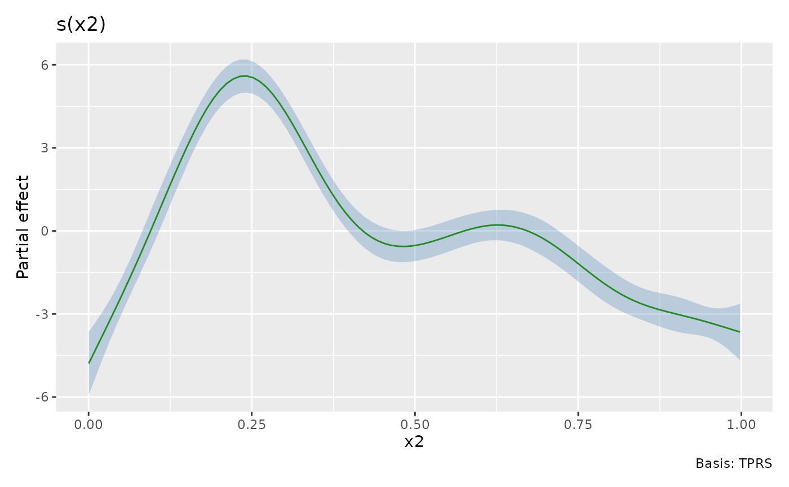
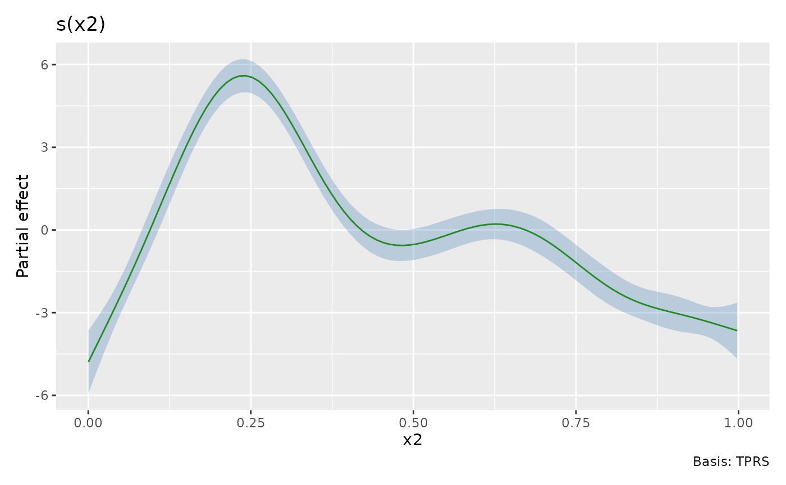

Plot the result of a call to smooth_estimates()
Source: R/smooth-estimates.R
draw.smooth_estimates.RdPlot the result of a call to smooth_estimates()
Usage
# S3 method for class 'smooth_estimates'
draw(
object,
constant = NULL,
fun = NULL,
contour = TRUE,
grouped_by = FALSE,
contour_col = "black",
n_contour = NULL,
ci_alpha = 0.2,
ci_col = "black",
smooth_col = "black",
resid_col = "steelblue3",
decrease_col = "#56B4E9",
increase_col = "#E69F00",
change_lwd = 1.75,
partial_match = FALSE,
discrete_colour = NULL,
discrete_fill = NULL,
continuous_colour = NULL,
continuous_fill = NULL,
angle = NULL,
ylim = NULL,
crs = NULL,
default_crs = NULL,
lims_method = "cross",
caption = TRUE,
...
)Arguments
- object
a fitted GAM, the result of a call to
mgcv::gam().- constant
numeric; a constant to add to the estimated values of the smooth.
constant, if supplied, will be added to the estimated value before the confidence band is computed.- fun
function; a function that will be applied to the estimated values and confidence interval before plotting. Can be a function or the name of a function. Function
funwill be applied after adding anyconstant, if provided.- contour
logical; should contours be draw on the plot using
ggplot2::geom_contour().- grouped_by
logical; should factor by smooths be drawn as one panel per level of the factor (
FALSE, the default), or should the individual smooths be combined into a single panel containing all levels (TRUE)?- contour_col
colour specification for contour lines.
- n_contour
numeric; the number of contour bins. Will result in
n_contour - 1contour lines being drawn. Seeggplot2::geom_contour().- ci_alpha
numeric; alpha transparency for confidence or simultaneous interval.
- ci_col
colour specification for the confidence/credible intervals band. Affects the fill of the interval.
- smooth_col
colour specification for the smooth line.
- resid_col
colour specification for the partial residuals.
- decrease_col, increase_col
colour specifications to use for indicating periods of change.
col_changeis used whenchange_type = "change", whilecol_decreaseandcol_increaseare used when `change_type = "sizer"“.- change_lwd
numeric; the value to set the
linewidthto inggplot2::geom_line(), used to represent the periods of change.- partial_match
logical; should smooths be selected by partial matches with
select? IfTRUE,selectcan only be a single string to match against.- discrete_colour
a suitable colour scale to be used when plotting discrete variables.
- discrete_fill
a suitable fill scale to be used when plotting discrete variables.
- continuous_colour
a suitable colour scale to be used when plotting continuous variables.
- continuous_fill
a suitable fill scale to be used when plotting continuous variables.
- angle
numeric; the angle at which the x axis tick labels are to be drawn passed to the
angleargument ofggplot2::guide_axis().- ylim
numeric; vector of y axis limits to use all all panels drawn.
- crs
the coordinate reference system (CRS) to use for the plot. All data will be projected into this CRS. See
ggplot2::coord_sf()for details.- default_crs
the coordinate reference system (CRS) to use for the non-sf layers in the plot. If left at the default
NULL, the CRS used is 4326 (WGS84), which is appropriate for spline-on-the-sphere smooths, which are parameterized in terms of latitude and longitude as coordinates. Seeggplot2::coord_sf()for more details.- lims_method
character; affects how the axis limits are determined. See
ggplot2::coord_sf(). Be careful; in testing of some examples, changing this to"orthogonal"for example with the chlorophyll-a example from Simon Wood's GAM book quickly used up all the RAM in my test system and the OS killed R. This could be incorrect usage on my part; right now the grid of points at which SOS smooths are evaluated (if not supplied by the user) can produce invalid coordinates for the corners of tiles as the grid is generated for tile centres without respect to the spacing of those tiles.- caption
logical; show the smooth type in the caption of each plot?
- ...
additional arguments passed to
patchwork::wrap_plots().
Examples
load_mgcv()
# example data
df <- data_sim("eg1", seed = 21)
# fit GAM
m <- gam(y ~ s(x0) + s(x1) + s(x2) + s(x3), data = df, method = "REML")
# plot all of the estimated smooths
sm <- smooth_estimates(m)
draw(sm)
# evaluate smooth of `x2`
sm <- smooth_estimates(m, select = "s(x2)")
# plot it
draw(sm)
 # customising some plot elements
draw(sm, ci_col = "steelblue", smooth_col = "forestgreen", ci_alpha = 0.3)

# Add a constant to the plotted smooth
draw(sm, constant = coef(m)[1])
# Adding change indicators to smooths based on derivatives of the smooth
d <- derivatives(m, n = 100) # n to match smooth_estimates()
smooth_estimates(m) |>
add_sizer(derivatives = d, type = "sizer") |>
draw()
# customising some plot elements
draw(sm, ci_col = "steelblue", smooth_col = "forestgreen", ci_alpha = 0.3)

# Add a constant to the plotted smooth
draw(sm, constant = coef(m)[1])
# Adding change indicators to smooths based on derivatives of the smooth
d <- derivatives(m, n = 100) # n to match smooth_estimates()
smooth_estimates(m) |>
add_sizer(derivatives = d, type = "sizer") |>
draw()